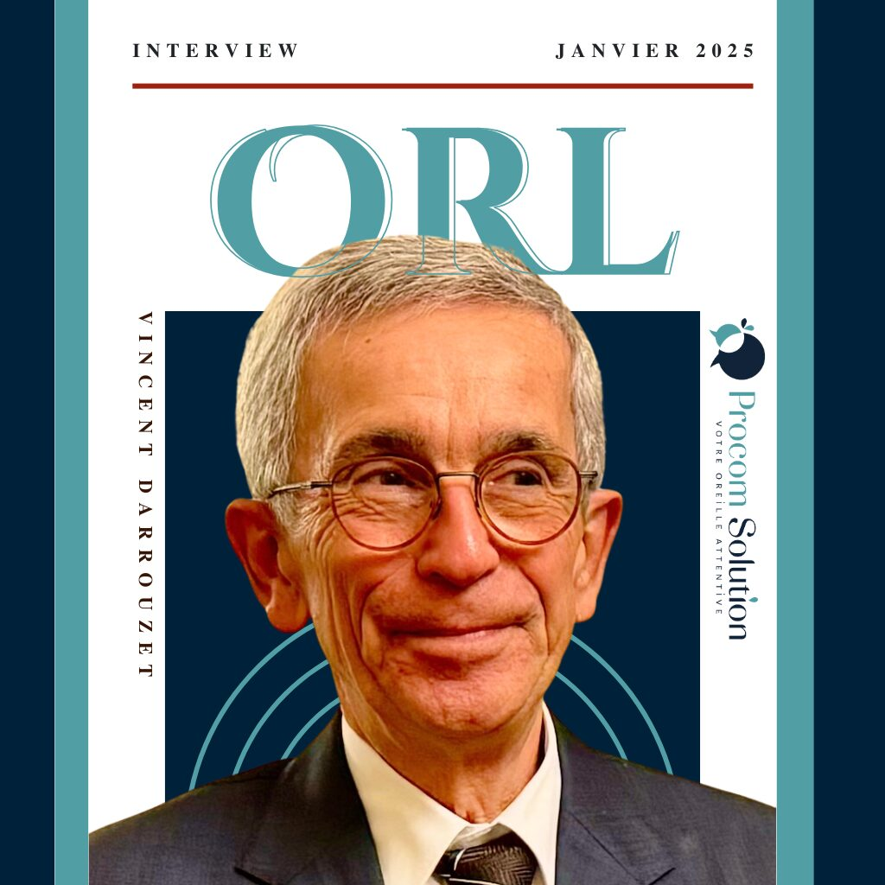
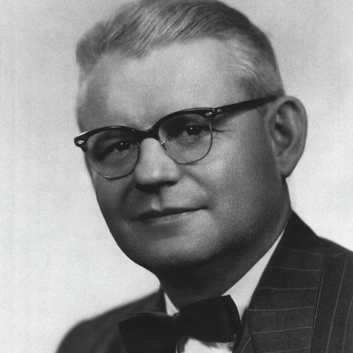
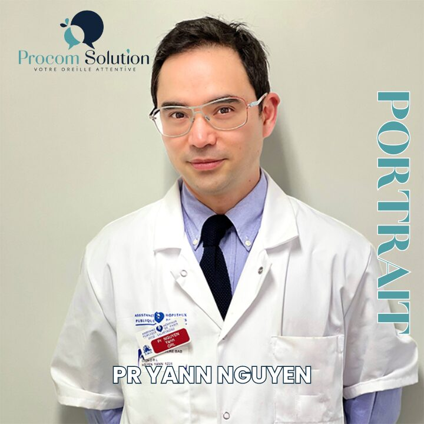
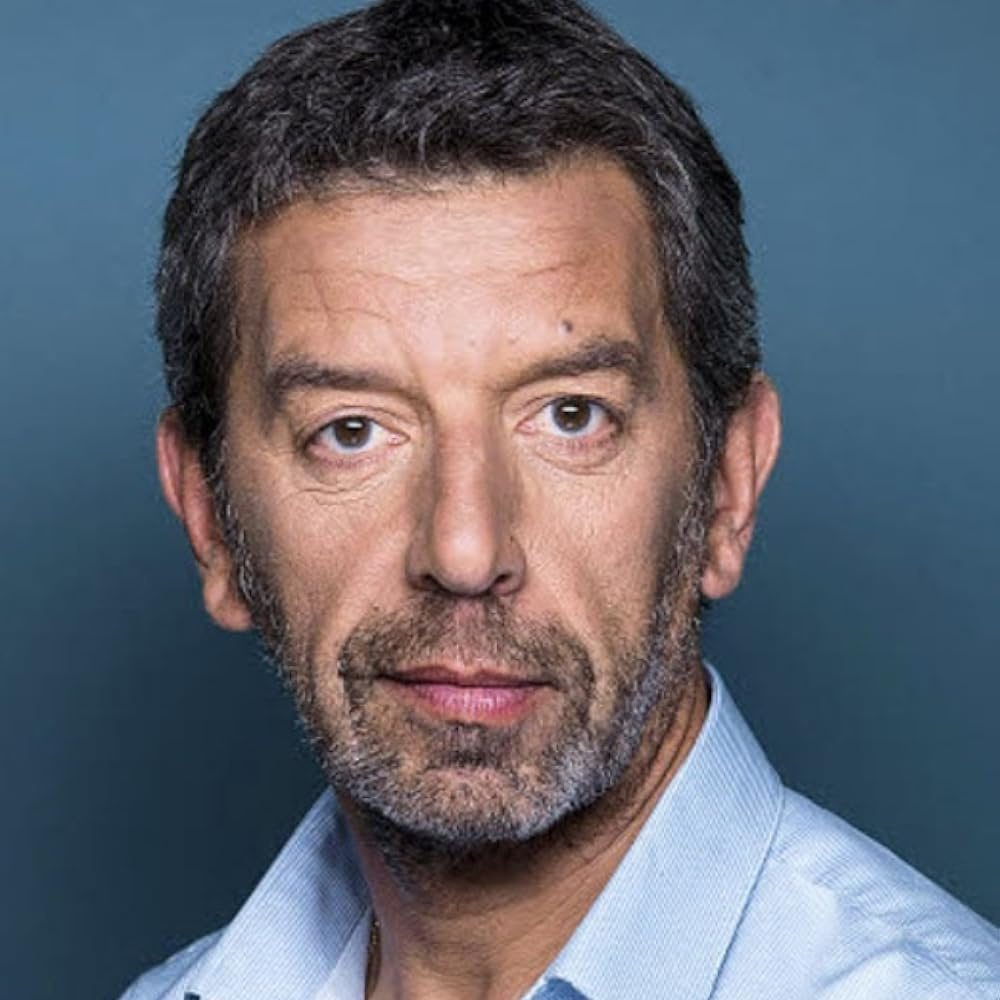
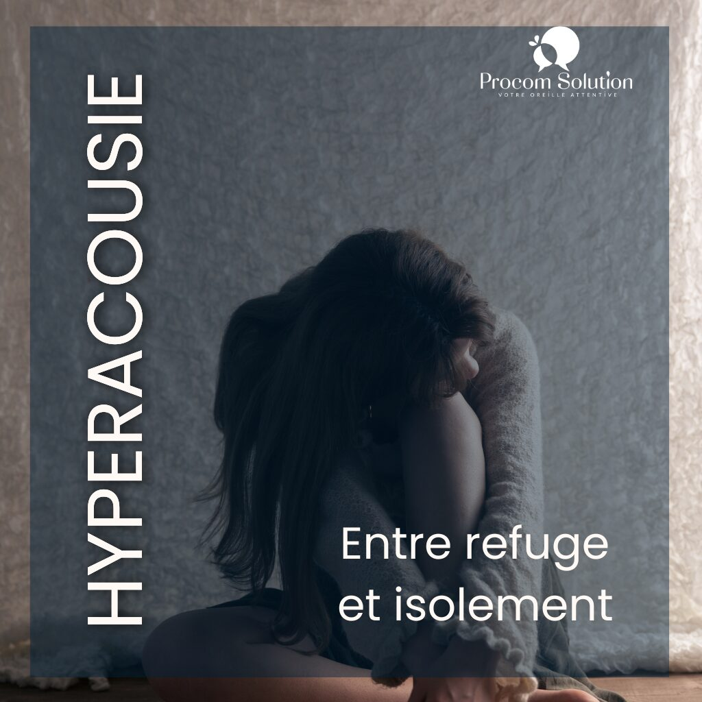
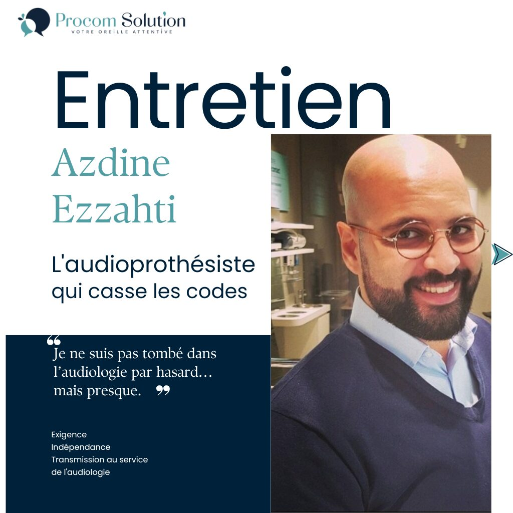
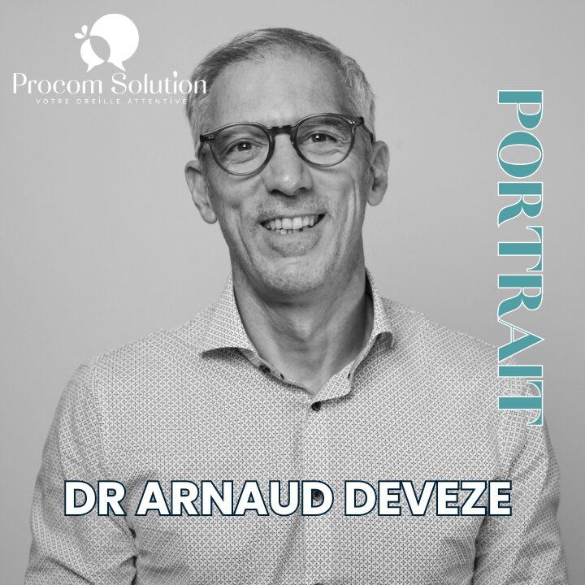

Entretien avec le Pr Vincent DARROUZET – « On ne soigne pas des maladies, mais des malades »
Seize ans chef de service, président du CNP d'ORL, décoré de la Légion d'honneur. Un entretien sur l'éthique, la transmission et l'avenir de l'audiologie.
Lire l'article →
Portrait : Raymond CARHART – Le père de l'audiologie
Il a popularisé le mot « audiologie » et fondé le premier cursus universitaire de la discipline. Sans lui, le métier n'existerait pas.
Lire l'article →Portrait : James JERGER – Le fondateur de l'American Academy of Audiology
Plus de 350 articles, onze livres, une académie et un journal. Il a unifié l'audiologie américaine, et s'est éteint en juillet 2024.
Lire l'article →
Entretien avec le Pr Yann NGUYEN – La chirurgie robotisée de l'oreille
Robotol, thérapie génique, otospongiose : comment la robotique change la chirurgie de l'oreille à la Pitié-Salpêtrière.
Lire l'article →Portrait : Dr Jean ABITBOL – ORL et spécialiste mondial de la voix
Pionnier du laser CO2 sur les cordes vocales, auteur de « L'odyssée de la voix ». Il a soigné la voix de ceux dont c'est le métier.
Lire l'article →
Portrait : Dr Michel CYMES – Le chirurgien ORL qui a rendu la médecine audible
Avant d'être le médecin le plus connu de France, il était chirurgien ORL à Georges-Pompidou. Portrait d'un vulgarisateur.
Lire l'article →Portrait : Dr Susan SHORE – Pionnière de la recherche sur les acouphènes
Elle a montré d'où vient l'acouphène dans le cerveau — et en a tiré un dispositif de stimulation bimodale aujourd'hui en cours de commercialisation.
Lire l'article →
Entretien avec Xavier CARRIOU – Fondateur d'Acouphénia
Il a déposé plus de 40 brevets et veut faire reconnaître un nouveau métier. Rencontre avec le fondateur d'Acouphénia.
Lire l'article →
L'hyperacousie ou la dualité du silence : entre refuge et isolement
2 % de la population, jusqu'à 40 % chez les personnes souffrant d'acouphènes. Un trouble encore largement sous-diagnostiqué.
Lire l'article →
Entretien avec Azdine Ezzahti – L'audioprothésiste qui casse les codes
Ingénieur de gestion, herboriste, chauffeur de taxi, puis audioprothésiste. Un parcours qui explique beaucoup de choses.
Lire l'article →
Entretien avec le Dr Arnaud DEVEZE – ORL, chirurgien de l'oreille et fondateur d'Audya
Oto-neurochirurgie, implants auditifs et parcours de soins : pourquoi il a créé Audya pour sécuriser le dialogue entre ORL et audioprothésistes.
Lire l'article →Ton enfant pleure en se frottant l'oreille ? Voici quoi faire
Les bons réflexes quand un enfant se plaint de son oreille.
Lire l'article →